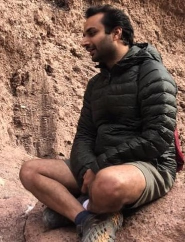

Dr. Sahil Garg (Vice President, Dept. of Machine Learning Research at Morgan Stanley)

Research Interests
I enjoy conducting problem driven research. In the past 12 years, I had the privilege of collaborating with many researchers from diverse fields, and accordingly, some of the research interests are listed as below.
Deep Neural Nets (modeling noisy timeseries, out-of-distribution detection, continual learning, domain adaptation, information theoretic clustering, transfer entropy estimation, density & generative modeling, robust classification, scaling laws, distributional invariance, Hawkes processes, mutual information objective for multi-model representation learning or knowledge transfer).
Machine Learning (nonstationary kernels, informative sensing, kernelized locality sensitive hashing for representation learning, convolution kernels for text, information theory, nearly unsupervised, attention mechanism in kernels via nonstationarity, interpretative, data-efficient, neuro-inspired, sparse modeling).
Natural Language Processing (biomedical relation extraction, dialog modeling, abstract meaning representations, discourse analysis for measuring thought coherence and complexity, metaphor detection, density and generative modeling, semantic parsing, large language modeling, interpretative document summary).
Network Science (generative modeling, phase transition in community detection, link prediction, relocation, differential privacy, hyperbolic spaces, GCN).
Computational Psychiatry (early diagnosis, therapeutic dialogues, schizophrenia, post-traumatic stress disorder, chronic pain, major depression, drug addiction, anti-NMDA receptor encephalitis, drug abuse, suicidal ideation, Alzheimer’s).
Robotics (information gathering, spatio temporal modeling, reinforcement learning).
Employment and Education
I am enjoying the world of finance, continuing my passion for problem-driven research.
Previously, I explored the field of computational psychiatry, as a postdoctoral fellow in Icahn school of medicine at Mount Sinai, under the mentorship of Dr. Cheryl Corcoran and Dr. Guillermo Cecchi.
I was advised by Prof. Aram Galstyan for my PhD thesis (USC), "Hashcode Representations of Natural Language for Relation Extraction".
I have active collaborations with IBM Research (NY), MIT, NYU, and U. of Montreal.
In the past life, I had the privilege of learning under the guidance of Prof. Nora Ayanian (USC), Prof. Amarjeet Singh (IIIT Delhi), and Prof. Fabio Ramos (U. of Sydney).
"Selected" Publications as Lead Author
In- or Out-of-Distribution Detection via Dual Divergence Estimation. Sahil Garg*, Sanghamitra Dutta, Mina Dalirrooyfard, Anderson Schneider, Yuriy Nevmyvaka. UAI-23. PDF, Code.
Information Theoretic Clustering via Divergence Maximization among Clusters. Sahil Garg*, Mina Dalirrooyfard, Anderson Schneider, Yeshaya Adler, Yuriy Nevmyvaka, Yu Chen, Fengpei Li, Guillermo Cecchi. UAI-23. PDF, Code.
Estimating Transfer Entropy under Long Ranged Dependencies. Sahil Garg*, Umang Gupta, Yu Chen, Syamantak Datta Gupta, Yeshaya Adler, Anderson Schneider, Yuriy Nevmyvaka. UAI-22. PDF, Code.
Modeling Dialogues with Hashcode Representations: A Nonparametric Approach. Sahil Garg*, Irina Rish, Guillermo Cecchi, Palash Goyal, Sarik Ghazarian, Shuyang Gao, Greg Ver Steeg, Aram Galstyan. AAAI-20. PDF.
PhD Thesis. Sahil Garg. USC. PDF.
Nearly-Unsupervised Hashcode Representations for Relation Extraction. Sahil Garg*, Aram Galstyan, Greg Ver Steeg and Guillermo Cecchi. EMNLP-19. PDF, Code.
Kernelized Hashcode Representations for Relation Extraction. Sahil Garg*, Aram Galstyan, Greg Ver Steeg, Irina Rish, Guillermo Cecchi, Shuyang Gao. AAAI-19. PDF, Code.
Stochastic Learning of Nonstationary Kernels for Natural Language Modeling. Sahil Garg*, Greg Ver Steeg, Aram Galstyan. 2017. PDF.
Neurogenesis-Inspired Dictionary Learning: Online Model Adaption in a Changing World. Sahil Garg*, Irina Rish, Guillermo Cecchi, Aurelie Lozano. IJCAI-17. PDF, Code.
Extracting Biopathway Interactions using Semantic Parsing of Biomedical Text. Sahil Garg*, Aram Galstyan, Ulf Hermjakob, Daniel Marcu. AAAI-16. PDF, Code.
Persistent Monitoring of Stochastic Spatio-temporal Phenomena with a Small Team of Robots. Sahil Garg*, Nora Ayanian. RSS-14. PDF.
Learning Nonstationary Space-Time Models for Environmental Monitoring. Sahil Garg*, Amarjeet Singh, and Fabio Ramos. AAAI-12. PDF, Code.
CV and Other Links
My curriculum vitae are here (last updated in Mar 2021).
See Google Scholar for an extended list of the papers.
This site is text-positive and defiantly retro (hand-crafted HTML 1.0).
sahil.garg.cs at gmail.com